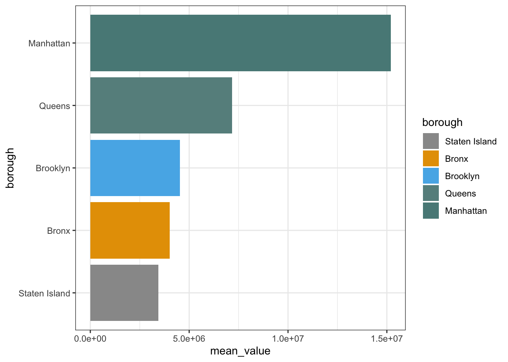
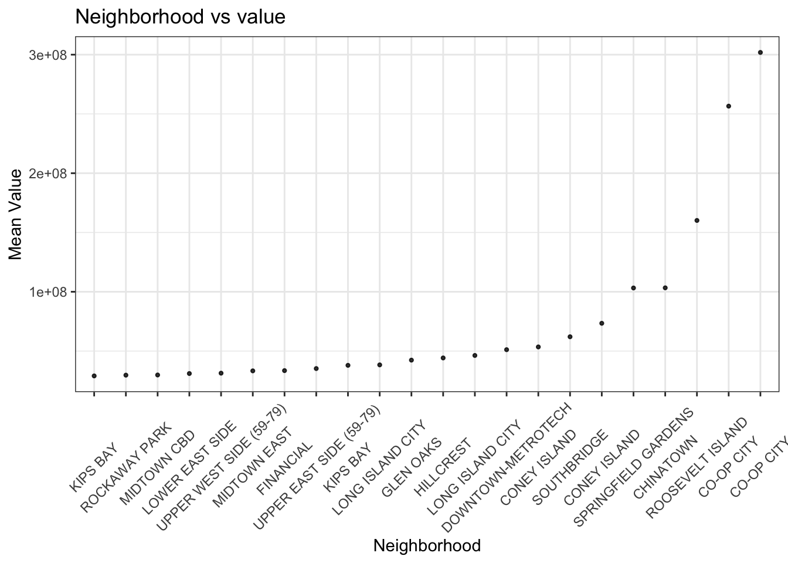
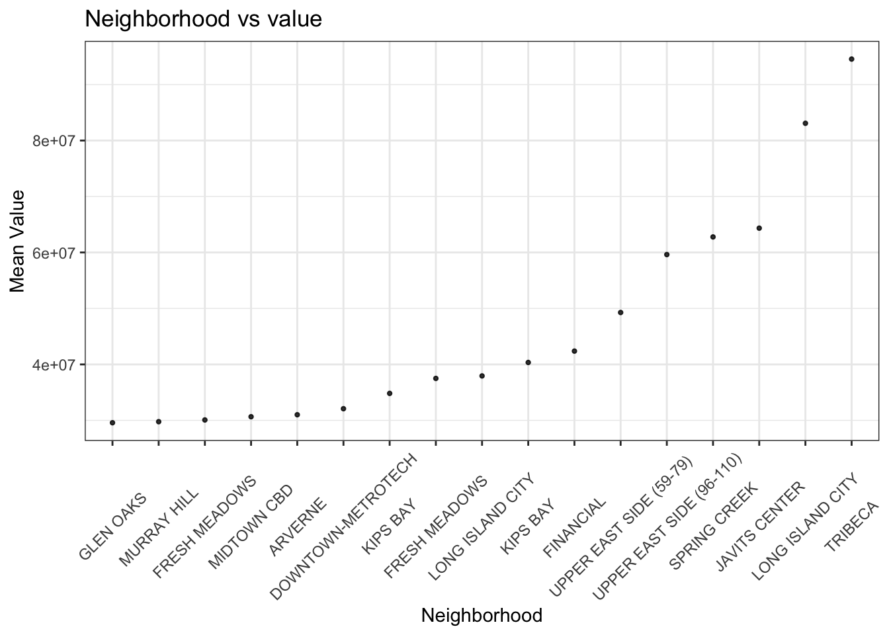
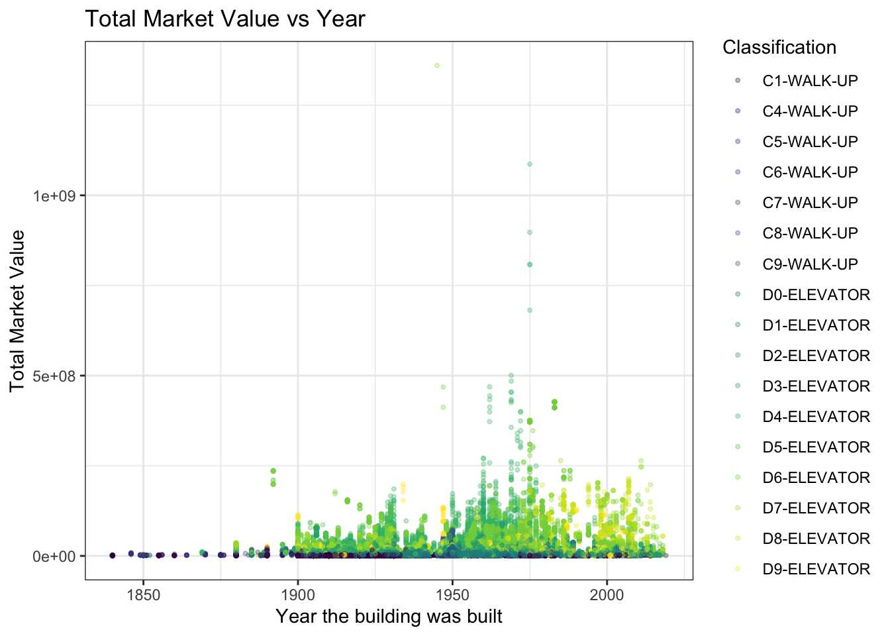
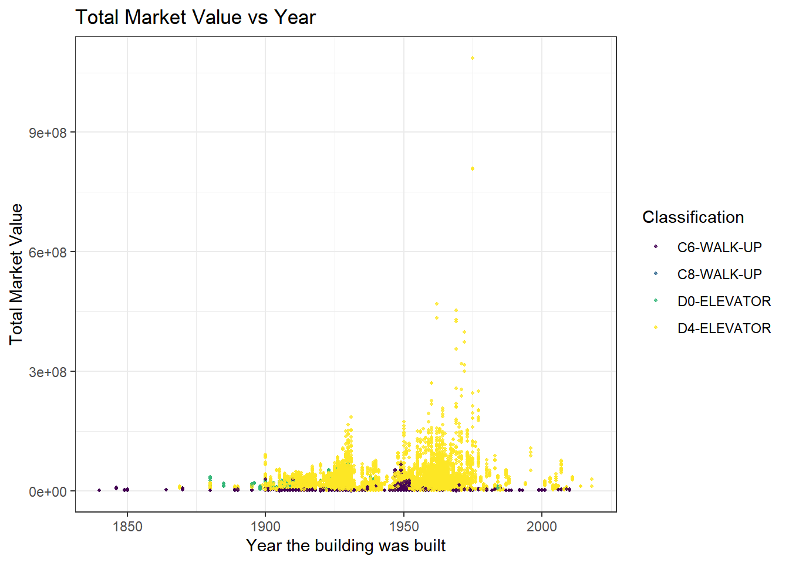
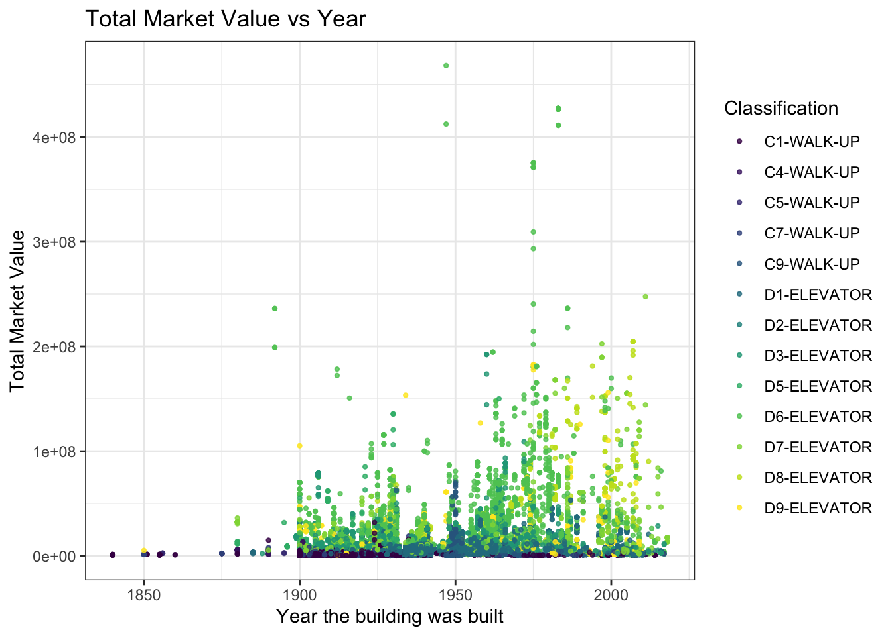
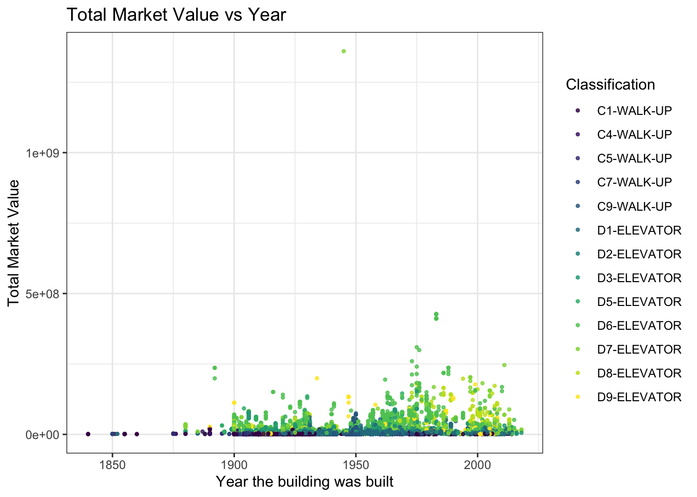
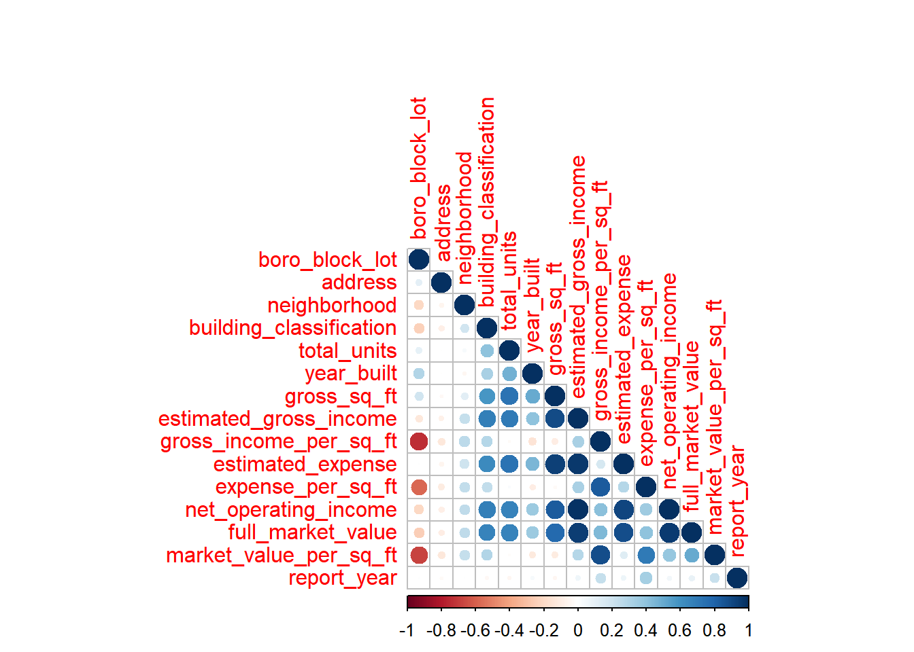

Exploratory
2022-11-25
Preprocessing
parts to be completed (add as your wish)
| Contents | Stage | Comments |
|---|---|---|
| separate observations | √ | |
| NAs (error value) | na.omit() other error? | |
| add explanations to each variable | ||
| link the address to lat&lon | other ways to plot map? | |
| simple scatter/box plots |
library(tidyverse)## ── Attaching packages ─────────────────────────────────────── tidyverse 1.3.2 ──
## ✔ ggplot2 3.3.6 ✔ purrr 0.3.4
## ✔ tibble 3.1.8 ✔ dplyr 1.0.10
## ✔ tidyr 1.2.0 ✔ stringr 1.4.1
## ✔ readr 2.1.2 ✔ forcats 0.5.2
## ── Conflicts ────────────────────────────────────────── tidyverse_conflicts() ──
## ✖ dplyr::filter() masks stats::filter()
## ✖ dplyr::lag() masks stats::lag()library(corrplot)## Warning: 程辑包'corrplot'是用R版本4.2.2 来建造的## corrplot 0.92 loadedIn the origin data, each properties are compared with three comparable rentals. So in total, information of four building(sets) forms one observation.
comparable_rental_income_raw = read_csv("data/DOF__Cooperative_Comparable_Rental_Income__Citywide.csv") %>%
janitor::clean_names() %>%
mutate(
building_classification = str_remove_all(building_classification, "\\s"),
building_classification_1 = str_remove_all(building_classification_1, "\\s"),
building_classification_2 = str_remove_all(building_classification_2, "\\s"),
building_classification_3 = str_remove_all(building_classification_3, "\\s")
)## Rows: 44960 Columns: 60
## ── Column specification ────────────────────────────────────────────────────────
## Delimiter: ","
## chr (16): Boro-Block-Lot, Address, Neighborhood, Building Classification, Bo...
## dbl (44): Total Units, Year Built, Gross SqFt, Estimated Gross Income, Gross...
##
## ℹ Use `spec()` to retrieve the full column specification for this data.
## ℹ Specify the column types or set `show_col_types = FALSE` to quiet this message.head(comparable_rental_income_raw)## # A tibble: 6 × 60
## boro_block_lot address neigh…¹ build…² total…³ year_…⁴ gross…⁵ estim…⁶ gross…⁷
## <chr> <chr> <chr> <chr> <dbl> <dbl> <dbl> <dbl> <dbl>
## 1 1-00011-0014 26 BEA… FINANC… D4-ELE… 21 1909 51387 2.40e6 46.7
## 2 1-00028-0001 3 HANO… FINANC… D0-ELE… 211 1926 239121 9.46e6 39.6
## 3 1-00094-0001 80 GOL… SOUTHB… D4-ELE… 1652 1971 2155492 6.81e7 31.6
## 4 1-00100-0026 138 NA… SOUTHB… D4-ELE… 43 1901 79422 3.13e6 39.4
## 5 1-00117-0001 185 PA… CIVIC … D4-ELE… 465 1960 515425 2.59e7 50.2
## 6 1-00134-0025 258 BR… CIVIC … D4-ELE… 45 1915 88320 4.24e6 48
## # … with 51 more variables: estimated_expense <dbl>, expense_per_sq_ft <dbl>,
## # net_operating_income <dbl>, full_market_value <dbl>,
## # market_value_per_sq_ft <dbl>, boro_block_lot_1 <chr>, address_1 <chr>,
## # neighborhood_1 <chr>, building_classification_1 <chr>, total_units_1 <dbl>,
## # year_built_1 <dbl>, gross_sq_ft_1 <dbl>, estimated_gross_income_1 <dbl>,
## # gross_income_per_sq_ft_1 <dbl>, estimated_expense_1 <dbl>,
## # expense_per_sq_ft_1 <dbl>, net_operating_income_1 <dbl>, …comparable_rental_income =
comparable_rental_income_raw %>%
separate(boro_block_lot, into = c("borough", "block", "lot"), sep = "-") %>%
separate(boro_block_lot_1, into = c("borough_1", "block_1", "lot_1"), sep = "-") %>%
separate(boro_block_lot_2, into = c("borough_2", "block_2", "lot_2"), sep = "-") %>%
separate(boro_block_lot_3, into = c("borough_3", "block_3", "lot_3"), sep = "-") %>%
mutate(
borough = case_when(
borough == "1" ~ "Manhattan",
borough == "2" ~ "Bronx",
borough == "3" ~ "Brooklyn",
borough == "4" ~ "Queens",
borough == "5" ~ "Staten Island"),
borough_1 = case_when(
borough_1 == "1" ~ "Manhattan",
borough_1 == "2" ~ "Bronx",
borough_1 == "3" ~ "Brooklyn",
borough_1 == "4" ~ "Queens",
borough_1 == "5" ~ "Staten Island"),
borough_2 = case_when(
borough_2 == "1" ~ "Manhattan",
borough_2 == "2" ~ "Bronx",
borough_2 == "3" ~ "Brooklyn",
borough_2 == "4" ~ "Queens",
borough_2 == "5" ~ "Staten Island"),
borough_3 = case_when(
borough_3 == "1" ~ "Manhattan",
borough_3 == "2" ~ "Bronx",
borough_3 == "3" ~ "Brooklyn",
borough_3 == "4" ~ "Queens",
borough_3 == "5" ~ "Staten Island")
)Seperate the observations:
so I would like to separate one and 3 comparables with into four subset with same variable names for further processing.
delete distance_from_co_op_in_miles* to make the
variables consistent to each other.
namelist = comparable_rental_income_raw %>%
select(-c("distance_from_co_op_in_miles","distance_from_co_op_in_miles_1","distance_from_co_op_in_miles_2")) %>%
colnames()
## to be optimized
rentalincom_ori = comparable_rental_income_raw %>%
select(append(namelist[1:14],"report_year"))
std_colname = colnames(rentalincom_ori)
rentalincom_c1 = comparable_rental_income_raw %>%
select(append(namelist[15:28],"report_year"))
colnames(rentalincom_c1) = std_colname
rentalincom_c2 = comparable_rental_income_raw %>%
select(append(namelist[29:42],"report_year"))
colnames(rentalincom_c2) = std_colname
rentalincom_c3 = comparable_rental_income_raw %>%
select(append(namelist[43:56],"report_year"))
colnames(rentalincom_c3) = std_colname
transformed_rental_income = rbind(rentalincom_ori,rentalincom_c1,rentalincom_c2,rentalincom_c3)clean data
transformed_rental_income = transformed_rental_income %>%
na.omit()
save(transformed_rental_income, file = "data/cleaned_data.RData")Data description
Boro-Block-Lot: Borough-Block-Lot(BBL) location
comparable_rental_income_raw %>% distinct(neighborhood)## # A tibble: 295 × 1
## neighborhood
## <chr>
## 1 FINANCIAL
## 2 SOUTHBRIDGE
## 3 CIVIC CENTER
## 4 TRIBECA
## 5 CHINATOWN
## 6 SOHO
## 7 LOWER EAST SIDE
## 8 ALPHABET CITY
## 9 EAST VILLAGE
## 10 LITTLE ITALY
## # … with 285 more rowscomparable_rental_income_raw %>% distinct(year_built)## # A tibble: 123 × 1
## year_built
## <dbl>
## 1 1909
## 2 1926
## 3 1971
## 4 1901
## 5 1960
## 6 1915
## 7 1920
## 8 1900
## 9 1925
## 10 1931
## # … with 113 more rowsGross SqFt: Gross square footage of the building Estimated Gross Income: Estimated Income per SquareFoot * Gross SquareFoot Gross Income per SqFt: Estimated income per squarefoot of median comparable Estimated Expense: Estimated Expense per SquareFoot * Gross SquareFoot Expense per SqFt: Estimated expense per squarefoot of median comparab Net Operating Income: Estimated Gross Income-Estimated Expense Full Market Value: Current year’s total market value of the land and building Market Value per SqFt: Full Market Value/ Gross SquareFoot Distance from Co-op in miles: calculated distance from comparable to the subject
plots
Overview of key variables
Which borough has the highest full_market_value?
the first rental only
plot_borough =
comparable_rental_income %>%
drop_na() %>%
group_by(borough) %>%
summarise(mean_value = mean(full_market_value)) %>%
mutate(borough = fct_reorder(borough,mean_value)) %>%
ggplot(aes(x = borough, y = mean_value, fill = mean_value))+
geom_bar(stat = 'identity')+
labs(
title = "Borough vs value",
x = "Borough",
y = "Mean Value"
)+
viridis::scale_color_viridis(
name = "Classification",
discrete = TRUE
)+
theme(axis.text.x = element_text(angle = 45, vjust = 0.5))+
coord_flip()+
theme_bw()
plot_borough
summary on all rentals
plot_borough =
transformed_rental_income %>%
drop_na() %>%
separate(boro_block_lot, into = c("borough", "block", "lot"), sep = "-") %>%
mutate(
borough = case_when(
borough == "1" ~ "Manhattan",
borough == "2" ~ "Bronx",
borough == "3" ~ "Brooklyn",
borough == "4" ~ "Queens",
borough == "5" ~ "Staten Island")) %>%
drop_na() %>%
group_by(borough) %>%
summarise(mean_value = mean(full_market_value),
value_sd = sd(full_market_value)) %>%
mutate(borough = fct_reorder(borough,mean_value)) %>%
ggplot(aes(x = borough, y = mean_value, fill = borough))+
geom_bar(stat = 'identity')+
scale_fill_manual(values=c("#D9B489", "#D49F3A", "#BC3D1C", "#4C372D", "#E8E3B9"))+
coord_flip()+
theme_bw()
plot_borough
Neighbourhoods with highest full market value(mean_value > 29000000):
plot_neighbor =
comparable_rental_income_raw %>%
drop_na() %>%
group_by(neighborhood) %>%
summarise(mean_value = mean(full_market_value)) %>%
mutate(neighborhood = fct_reorder(neighborhood,mean_value)) %>%
filter(mean_value > 29000000) %>%
ggplot(aes(x = neighborhood, y = mean_value))+
geom_point(alpha = .8, size = 0.8)+
theme_bw()+
labs(
title = "Neighborhood vs value",
x = "Neighborhood",
y = "Mean Value"
)+
viridis::scale_color_viridis(
name = "Classification",
discrete = TRUE
)+
theme(axis.text.x = element_text(angle = 45, vjust = 0.5))
plot_neighbor
plot_neighbor_1 =
comparable_rental_income_raw %>%
drop_na() %>%
group_by(neighborhood_1) %>%
summarise(mean_value_1 = mean(full_market_value_1)) %>%
mutate(neighborhood_1 = fct_reorder(neighborhood_1,mean_value_1)) %>%
filter(mean_value_1 > 29000000) %>%
ggplot(aes(x = neighborhood_1, y = mean_value_1))+
geom_point(alpha = .8, size = 0.8)+
theme_bw()+
labs(
title = "Neighborhood vs value",
x = "Neighborhood",
y = "Mean Value"
)+
viridis::scale_color_viridis(
name = "Classification",
discrete = TRUE
)+
theme(axis.text.x = element_text(angle = 45, vjust = 0.5))
plot_neighbor_1
plot_neighbor_2 =
comparable_rental_income_raw %>%
drop_na() %>%
group_by(neighborhood_2) %>%
summarise(mean_value_2 = mean(full_market_value_2)) %>%
mutate(neighborhood_2 = fct_reorder(neighborhood_2,mean_value_2)) %>%
filter(mean_value_2 > 29000000) %>%
ggplot(aes(x = neighborhood_2, y = mean_value_2))+
geom_point(alpha = .8, size = 0.8)+
theme_bw()+
labs(
title = "Neighborhood vs value",
x = "Neighborhood",
y = "Mean Value"
)+
viridis::scale_color_viridis(
name = "Classification",
discrete = TRUE
)+
theme(axis.text.x = element_text(angle = 45, vjust = 0.5))
plot_neighbor_2
plot_neighbor_3 =
comparable_rental_income_raw %>%
drop_na() %>%
group_by(neighborhood_3) %>%
summarise(mean_value_3 = mean(full_market_value_3)) %>%
mutate(neighborhood_3 = fct_reorder(neighborhood_3,mean_value_3)) %>%
filter(mean_value_3 > 29000000) %>%
ggplot(aes(x = neighborhood_3, y = mean_value_3))+
geom_point(alpha = .8, size = 0.8)+
theme_bw()+
labs(
title = "Neighborhood vs value",
x = "Neighborhood",
y = "Mean Value"
)+
viridis::scale_color_viridis(
name = "Classification",
discrete = TRUE
)+
theme(axis.text.x = element_text(angle = 45, vjust = 0.5))
plot_neighbor_3
transformed_rental_income %>%
drop_na() %>%
ggplot(aes(x = year_built, y = full_market_value,color = building_classification))+
geom_point(alpha = .3, size = 0.8)+
theme_bw()+
labs(
title = "Total Market Value vs Year",
x = "Year the building was built",
y = "Total Market Value"
)+
viridis::scale_color_viridis(
name = "Classification",
discrete = TRUE
)
comparable_rental_income_raw %>%
drop_na() %>%
ggplot(aes(x = year_built, y = full_market_value,color = building_classification))+
geom_point(alpha = .8, size = 0.8)+
theme_bw()+
labs(
title = "Total Market Value vs Year",
x = "Year the building was built",
y = "Total Market Value"
)+
viridis::scale_color_viridis(
name = "Classification",
discrete = TRUE
)
comparable_rental_income_raw %>%
drop_na() %>%
ggplot(aes(x = year_built_1, y = full_market_value_1, color = building_classification_1))+
geom_point(alpha = .8, size = 0.8)+
theme_bw()+
labs(
title = "Total Market Value vs Year",
x = "Year the building was built",
y = "Total Market Value"
)+
viridis::scale_color_viridis(
name = "Classification",
discrete = TRUE
)
comparable_rental_income_raw %>%
drop_na() %>%
ggplot(aes(x = year_built_2, y = full_market_value_2,color = building_classification_2))+
geom_point(alpha = .8, size = 0.8)+
theme_bw()+
labs(
title = "Total Market Value vs Year",
x = "Year the building was built",
y = "Total Market Value"
)+
viridis::scale_color_viridis(
name = "Classification",
discrete = TRUE
)
comparable_rental_income_raw %>%
drop_na() %>%
ggplot(aes(x = year_built_3, y = full_market_value_3,color = building_classification_3))+
geom_point(alpha = .8, size = 0.8)+
theme_bw()+
labs(
title = "Total Market Value vs Year",
x = "Year the building was built",
y = "Total Market Value"
)+
viridis::scale_color_viridis(
name = "Classification",
discrete = TRUE
)
Correlation plots
rentalincom_c1_1 =
rentalincom_c1 %>%
drop_na()
# Plot the correlation
corr = data.frame(lapply(lapply(rentalincom_c1_1, as.factor), as.numeric))
corrplot(cor(corr), type = "lower")
rentalincom_c2_1 =
rentalincom_c2 %>%
drop_na()
# Plot the correlation
corr = data.frame(lapply(lapply(rentalincom_c2_1, as.factor), as.numeric))
corrplot(cor(corr), type = "lower")
rentalincom_c3_1 =
rentalincom_c3 %>%
drop_na()
# Plot the correlation
corr = data.frame(lapply(lapply(rentalincom_c3_1, as.factor), as.numeric))
corrplot(cor(corr), type = "lower")
comparable_rental_income_raw %>%
ggplot(aes(x = estimated_gross_income, y = estimated_expense,color = building_classification))+
geom_point(alpha = .8, size = 0.8)+
theme_bw()+
labs(
title = "Expense vs Income",
x = "Estimated Income",
y = "Estimated Expense"
)+
viridis::scale_color_viridis(
name = "Classification",
discrete = TRUE
)